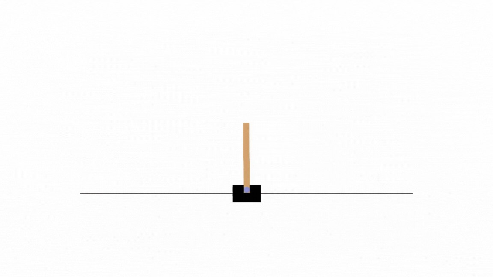
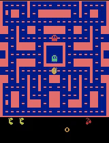
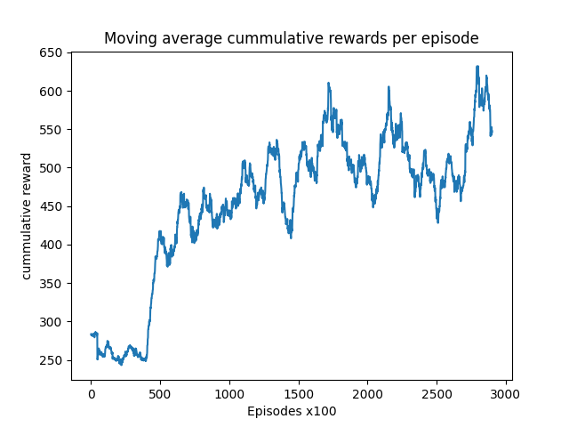

Project summary
Reinforcement Learning (RL) has emerged as a powerful paradigm for training intelligent agents to make sequential decisions in various environments. This project explores two fundamental RL algorithms, Q-Learning and Deep Q-Networks (DQN), by applying them to two distinct environ- ments: the classic Cart Pole and the iconic Atari game, Pac-Man. The Cart Pole environment serves as a simple yet illustrative example, ideal for understanding basic RL concepts. In contrast, the Pac-Man environment offers a complex and visually rich domain, showcasing the scalability and versatility of RL algorithms. Through empirical evaluation and analysis, this project investi- gates the performance and behaviors of Q-Learning and DQN agents across these environments, investigating their strengths, limitations, and potential applications. Additionally, insights gained from comparing these algorithms in different environments provide valuable perspectives for un- derstanding the capabilities and challenges of RL methodologies/p>
Cart Pole
Ms Pac Man
A preview of the results
If you want to check the full results, read the report by clicking the Project Report button on the top of the page
The following graph demonstrates the ability of the RL agent to learn the Ms Pac Man environment and improve it's average score through trial and error.
